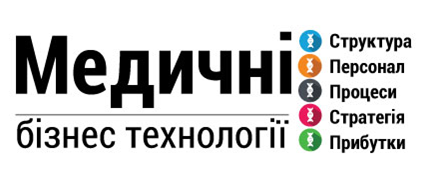

Досвід роботи
Висококваліфіковані спеціалісти проводять діагностику стану керованості компанії, її гнучкості та здатності реагувати на зміни зовнішнього середовища, допомагають оптимізувати бізнес-процеси, виявити слабкі місця в організації та виправити їх, провести діагностику системи ціноутворення, системи мотивації для відповідності поточним цілям компанії, виробити необхідні рішення за підсумком діагностики, провести необхідні зміни в компанії.

Оперативне плануванняу
- Реэстрація компаній і планування бізнесу
- Вибір найбільшь ефективної організаційної структури
- Планування стратегії
- Ліцензування
- Сертифікація
- Акредитація
- Охорона праці
Система управління
- Аудит кадрової системи
- Побудова кадрового діловодства
- Дослідження ринку праці
- Побудова систем підбору, адаптації, навчання, мотивації
- Атестація та оцінка персоналу
- Розробка систем управління по цілям
- Побудова юридичного контуру
- Аудит якості послуг
Фінансові послуги
- Розробка бізнес-плану
- Розробка техніко-економічного обґрунтування (ТЕО)
- Розробка фінансово-економічного обґрунтування (ФЕО)
- Побудова системи бюджетування та планування
- Аналіз фінансового стану підприємства
- Рекомендації по оптимізації витрат
ІТ, телекомунікаційні послуги
- Розробка ІТ-стратегії
- Проведення аудиту ІТ-інфраструктури компанії
- Підготовка пакету рекомендацій по усуненню недоліків та підвищенню ефективності ІТ-інфраструктури
Маркетингові послуги
- Маркетинговий аудит (outdoor, indoor процеси, бренд-позиціонування, репутаційний аналіз)
- Комунікаційний аудит (репутаційний менеджмент)
- Розробка позиціонування, PR та IR стратегії
- САБ-канальні стратегії: online, CRM (побудова відносин з клієнтами), аналіз цільової аудиторії, попиту та ціноутворення, програми лояльності